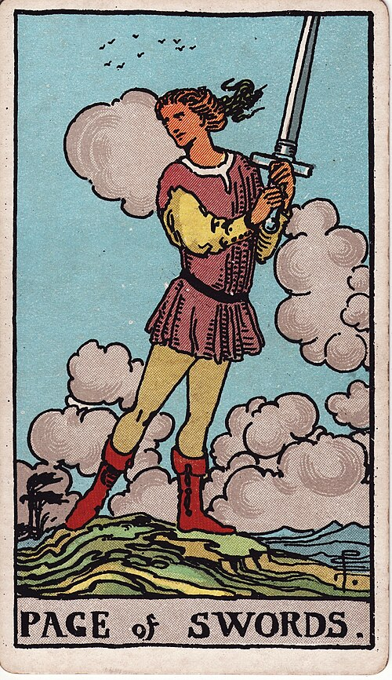

| Arcana | Minor |
| Suit | Swords |
| Element | Air |
| Attribution | Earth of Air |
Page of Swords
Page of Swords
In shortCurious, sharp, and asking the awkward question.
Upright
curiositysharp questionsvigilancelearning fasta candid message
This is intellectual appetite without the judgement to temper it yet — excellent for learning, research, and noticing what does not add up. As a message it brings information, often bluntly.
Reversed
gossipscattered thinkingdefensivenessspeaking without knowing
The sharpness goes sideways. Gossip, opinions delivered with more confidence than basis, defensiveness dressed up as debate, or a mind so scattered across inputs that nothing is actually being learned.
In the pictureHe stands on a hilltop holding a sword aloft in both hands, looking back over his shoulder. The clouds are ragged and birds scatter — turbulent air. His stance is braced; he is ready and slightly on edge.
The turn
Ask the awkward question. Do the research before you form the opinion.
Reading with your own deck?
Sage records the cards you actually pull, writes the reading, keeps every one, and shows you what keeps returning across them. Free, private, no account.